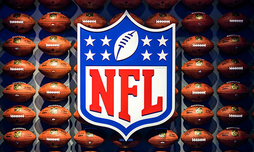

How Popular Is Football?
American football is the most popular sport in the US. The most recent superbowl, Superbowl 56, drew in 112.3 million on NBC.
This was the most popular Superbowl since 2017, when the Patriots beat the Falcons in overtime, 34-28, which had the Patriots down by 25 points with 2 minutes left in the third quarter.
Football is played nationwide by highschools, colleges, little leagues, and professionally, with the NFL being the most popular, followed by other Pro leagues, like the XFL, and the upcoming, USFL.
What is the NFL?
The NFL is a professional gridiron football league. The NFL stands for 'National Football League'. The NFL consists of 32 teams, divided into 2 conferences, the NFC (National Football Conference), and the AFC (American Football Conference), which is then split into
4 divisions, North, East, South, and West.

NFL Logo, by Adrian Curiel